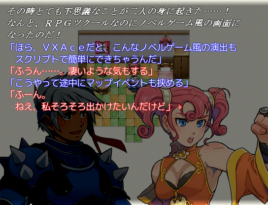
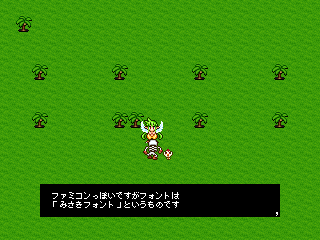

 |
| 対応：RPGツクールVX Ace |
| VIPRPG素材保管@wikiでの保管：不可 |
| VIPRPG外での使用：可 |
| 作者コメント： tomoakyさん制作の「RGSS3_ノベルウィンドウ Ver1.1」に 自分が以前作ったメッセージウィンドウの改造を合流させたものです。 イベントエディタの「文章の表示」を使ってノベルゲーム風の演出を持たせた 見るゲや読むゲが作りやすくなります。 |
| 備考： |
| 対応：2000＆2003(ツクールブリッジ用・変換テキスト) |
| VIPRPG素材保管@wikiでの保管：○ |
| VIPRPG外での使用：○ |
| 作者コメント： 行数がとても多く、凄く重くなるので、コモンイベント１ページ目には入れない方が無難です。 |
| 備考： |
 |
| 対応：2000 |
| VIPRPG素材保管@wikiでの保管：○ |
| VIPRPG外での使用：○ |
| 作者コメント： 未記入 |
| 備考：exeファイル収録 |